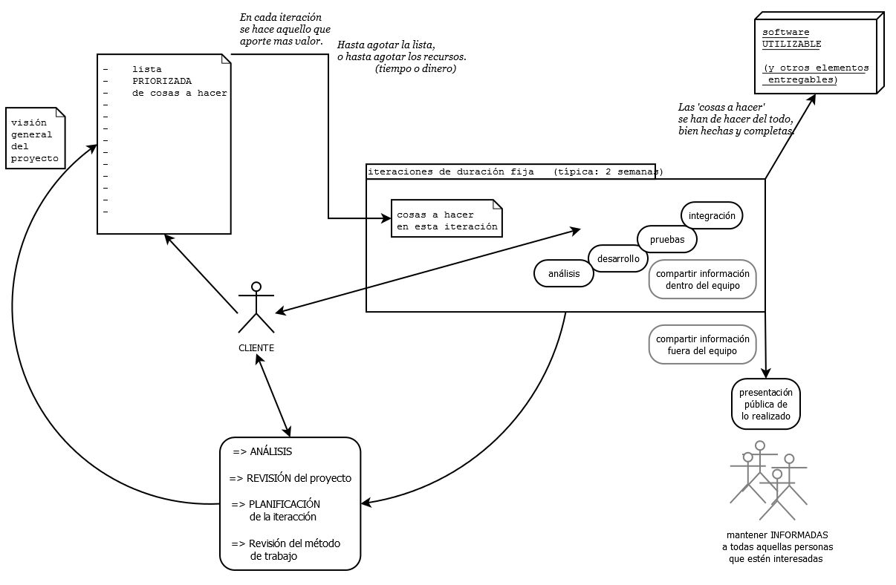

Análisis y especificaciones del Software
Objetivo
Realizar el análisis y conocer las especificaciones mediante las necesidades o requerimientos del software.
Se debe tener claro cuál es el problema y realizar la búsqueda de información al respecto, para poder definir sus componentes y funciones que lo formaran. El análisis es fundamental en el desarrollo de software ya que de esto depende el éxito del mismo. Todo el proceso se basa en los requerimientos obtenidos en esta etapa. Es muy importante entender lo que desea el cliente y a su vez manifestarle nuestra visión, de cómo lo interpretamos, para llegar a una idea concreta de lo que se requiere y con quienes va a interactuar el futuro sistema. Después de este paso se deben presentar a los desarrolladores los requerimientos de la manera más detallada y estructurada posible. Para el desarrollo de software se debe trabajar sobre un modelo, pero no siempre está ligado a su enfoque, por lo cual se puede adaptar o modificar para un buen proceso. Existen varios modelos y hay tres paradigmas para los modelos de desarrollo de software.